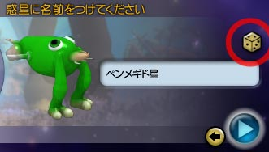

目次 > ゲームについて > シミュレーション攻略 > SPORE > 情報
| 概要 | 情報 | ステージ攻略 |
| コレクション一覧 | 継承アビリティー一覧 | アチーブメント一覧 |
| SPORE 攻略へ | 目次へ戻る |
| 体験版 |
| SPORE の集落ステージ(Creature Stage)で登場するクリーチャーを作れるSPORE Creature Creater の体験版が公式サイトからダウンロードできます(もちろん日本語版)。 Creature Creater が動けばSPORE 本編も動くとは言い切れませんが、少なくともCreature Creater が起動できないようなパソコンではSPORE 本編は動きません。 まあ、SPORE に興味がなくても、クリーチャーづくりは楽しいので、一度はやってみることをおすすめします。 下のサイトからダウンロードできます。 URL：http://www.japan.ea.com/spore/ |
| ランダムに決める |
| 星の名前や国家などはいちいち自分で決めなくとも、ボタン一つでランダムで決めることができます。下の画像の○のところにあるような、サイコロボタンを押すことでランダムで決めることができます。いちいち決めるのが面倒くさい場合は押してみてください。  |
| 概要 | 情報 | ステージ攻略 |
| コレクション一覧 | 継承アビリティー一覧 | アチーブメント一覧 |
| ページの上部へ | SPORE 攻略へ | 目次へ戻る |